Lecture 10: July 15th, 2024#
Random Numbers#
Note: I’m first going to show you the old way of generating random numbers in NumPy. If you’re reading older code, this is likely the way you’ll see random numbers generated. All new code should be written using the new method that I show you.
Older Method: Don’t use this!
import numpy as np
np.random.randint(0,39,size=10)
array([21, 10, 14, 1, 37, 34, 19, 20, 36, 0])
help(np.random.randint)
Help on built-in function randint:
randint(...) method of numpy.random.mtrand.RandomState instance
randint(low, high=None, size=None, dtype=int)
Return random integers from `low` (inclusive) to `high` (exclusive).
Return random integers from the "discrete uniform" distribution of
the specified dtype in the "half-open" interval [`low`, `high`). If
`high` is None (the default), then results are from [0, `low`).
.. note::
New code should use the ``integers`` method of a ``default_rng()``
instance instead; please see the :ref:`random-quick-start`.
Parameters
----------
low : int or array-like of ints
Lowest (signed) integers to be drawn from the distribution (unless
``high=None``, in which case this parameter is one above the
*highest* such integer).
high : int or array-like of ints, optional
If provided, one above the largest (signed) integer to be drawn
from the distribution (see above for behavior if ``high=None``).
If array-like, must contain integer values
size : int or tuple of ints, optional
Output shape. If the given shape is, e.g., ``(m, n, k)``, then
``m * n * k`` samples are drawn. Default is None, in which case a
single value is returned.
dtype : dtype, optional
Desired dtype of the result. Byteorder must be native.
The default value is int.
.. versionadded:: 1.11.0
Returns
-------
out : int or ndarray of ints
`size`-shaped array of random integers from the appropriate
distribution, or a single such random int if `size` not provided.
See Also
--------
random_integers : similar to `randint`, only for the closed
interval [`low`, `high`], and 1 is the lowest value if `high` is
omitted.
random.Generator.integers: which should be used for new code.
Examples
--------
>>> np.random.randint(2, size=10)
array([1, 0, 0, 0, 1, 1, 0, 0, 1, 0]) # random
>>> np.random.randint(1, size=10)
array([0, 0, 0, 0, 0, 0, 0, 0, 0, 0])
Generate a 2 x 4 array of ints between 0 and 4, inclusive:
>>> np.random.randint(5, size=(2, 4))
array([[4, 0, 2, 1], # random
[3, 2, 2, 0]])
Generate a 1 x 3 array with 3 different upper bounds
>>> np.random.randint(1, [3, 5, 10])
array([2, 2, 9]) # random
Generate a 1 by 3 array with 3 different lower bounds
>>> np.random.randint([1, 5, 7], 10)
array([9, 8, 7]) # random
Generate a 2 by 4 array using broadcasting with dtype of uint8
>>> np.random.randint([1, 3, 5, 7], [[10], [20]], dtype=np.uint8)
array([[ 8, 6, 9, 7], # random
[ 1, 16, 9, 12]], dtype=uint8)
New Method: This is an example of object oriented programming (OOP)
rng = np.random.default_rng()
type(rng)
numpy.random._generator.Generator
Make a length 10 NumPy array of random integers between 0 (inclusive) and 39 (exclusive).
arr = rng.integers(0,39,size=10)
arr
array([23, 3, 10, 16, 31, 0, 28, 4, 0, 31])
Choose five of those numbers (with replacement) and put them into a NumPy array.
rng.choice(arr,size=5)
array([31, 10, 10, 4, 0])
Create a \(3 \times 5\) NumPy array of random real numbers between -1 and 4.
You might expect this to work, but it won’t :(
rng.random(-1,4,size=(3,5))
---------------------------------------------------------------------------
TypeError Traceback (most recent call last)
Input In [9], in <cell line: 1>()
----> 1 rng.random(-1,4,size=(3,5))
File _generator.pyx:238, in numpy.random._generator.Generator.random()
TypeError: random() got multiple values for keyword argument 'size'
help(rng.random)
Help on built-in function random:
random(...) method of numpy.random._generator.Generator instance
random(size=None, dtype=np.float64, out=None)
Return random floats in the half-open interval [0.0, 1.0).
Results are from the "continuous uniform" distribution over the
stated interval. To sample :math:`Unif[a, b), b > a` multiply
the output of `random` by `(b-a)` and add `a`::
(b - a) * random() + a
Parameters
----------
size : int or tuple of ints, optional
Output shape. If the given shape is, e.g., ``(m, n, k)``, then
``m * n * k`` samples are drawn. Default is None, in which case a
single value is returned.
dtype : dtype, optional
Desired dtype of the result, only `float64` and `float32` are supported.
Byteorder must be native. The default value is np.float64.
out : ndarray, optional
Alternative output array in which to place the result. If size is not None,
it must have the same shape as the provided size and must match the type of
the output values.
Returns
-------
out : float or ndarray of floats
Array of random floats of shape `size` (unless ``size=None``, in which
case a single float is returned).
Examples
--------
>>> rng = np.random.default_rng()
>>> rng.random()
0.47108547995356098 # random
>>> type(rng.random())
<class 'float'>
>>> rng.random((5,))
array([ 0.30220482, 0.86820401, 0.1654503 , 0.11659149, 0.54323428]) # random
Three-by-two array of random numbers from [-5, 0):
>>> 5 * rng.random((3, 2)) - 5
array([[-3.99149989, -0.52338984], # random
[-2.99091858, -0.79479508],
[-1.23204345, -1.75224494]])
#3x5 array of random reals between 0 and 1
rng.random((3,5))
array([[0.63514021, 0.56553141, 0.09978128, 0.79237104, 0.89760093],
[0.00345691, 0.33854236, 0.34132857, 0.86383434, 0.03744881],
[0.18110922, 0.42317787, 0.13638367, 0.22164 , 0.52799113]])
#Mult. by 5 to stretch to correct length
#subtract 1 to shift to correct interval.
5*rng.random((3,5))-1
array([[ 0.16613158, 2.5931494 , 3.2410685 , -0.83977324, 1.45316039],
[ 3.58706661, 1.21739389, 0.75148656, 3.08111441, 0.44389826],
[-0.06123552, 1.00046731, -0.2622268 , 2.69316206, 3.33920517]])
Running the above cell a few times, we see that we can get pretty close to both -1 and 4.
Create a length 10 NumPy array of random numbers that follow a normal distribution with mean 2 and standard deviation 0.1.
This isn’t super important for our class, I just wanted to show it as an example.
help(rng.normal)
Help on built-in function normal:
normal(...) method of numpy.random._generator.Generator instance
normal(loc=0.0, scale=1.0, size=None)
Draw random samples from a normal (Gaussian) distribution.
The probability density function of the normal distribution, first
derived by De Moivre and 200 years later by both Gauss and Laplace
independently [2]_, is often called the bell curve because of
its characteristic shape (see the example below).
The normal distributions occurs often in nature. For example, it
describes the commonly occurring distribution of samples influenced
by a large number of tiny, random disturbances, each with its own
unique distribution [2]_.
Parameters
----------
loc : float or array_like of floats
Mean ("centre") of the distribution.
scale : float or array_like of floats
Standard deviation (spread or "width") of the distribution. Must be
non-negative.
size : int or tuple of ints, optional
Output shape. If the given shape is, e.g., ``(m, n, k)``, then
``m * n * k`` samples are drawn. If size is ``None`` (default),
a single value is returned if ``loc`` and ``scale`` are both scalars.
Otherwise, ``np.broadcast(loc, scale).size`` samples are drawn.
Returns
-------
out : ndarray or scalar
Drawn samples from the parameterized normal distribution.
See Also
--------
scipy.stats.norm : probability density function, distribution or
cumulative density function, etc.
Notes
-----
The probability density for the Gaussian distribution is
.. math:: p(x) = \frac{1}{\sqrt{ 2 \pi \sigma^2 }}
e^{ - \frac{ (x - \mu)^2 } {2 \sigma^2} },
where :math:`\mu` is the mean and :math:`\sigma` the standard
deviation. The square of the standard deviation, :math:`\sigma^2`,
is called the variance.
The function has its peak at the mean, and its "spread" increases with
the standard deviation (the function reaches 0.607 times its maximum at
:math:`x + \sigma` and :math:`x - \sigma` [2]_). This implies that
:meth:`normal` is more likely to return samples lying close to the
mean, rather than those far away.
References
----------
.. [1] Wikipedia, "Normal distribution",
https://en.wikipedia.org/wiki/Normal_distribution
.. [2] P. R. Peebles Jr., "Central Limit Theorem" in "Probability,
Random Variables and Random Signal Principles", 4th ed., 2001,
pp. 51, 51, 125.
Examples
--------
Draw samples from the distribution:
>>> mu, sigma = 0, 0.1 # mean and standard deviation
>>> s = np.random.default_rng().normal(mu, sigma, 1000)
Verify the mean and the variance:
>>> abs(mu - np.mean(s))
0.0 # may vary
>>> abs(sigma - np.std(s, ddof=1))
0.0 # may vary
Display the histogram of the samples, along with
the probability density function:
>>> import matplotlib.pyplot as plt
>>> count, bins, ignored = plt.hist(s, 30, density=True)
>>> plt.plot(bins, 1/(sigma * np.sqrt(2 * np.pi)) *
... np.exp( - (bins - mu)**2 / (2 * sigma**2) ),
... linewidth=2, color='r')
>>> plt.show()
Two-by-four array of samples from N(3, 6.25):
>>> np.random.default_rng().normal(3, 2.5, size=(2, 4))
array([[-4.49401501, 4.00950034, -1.81814867, 7.29718677], # random
[ 0.39924804, 4.68456316, 4.99394529, 4.84057254]]) # random
rng.normal(2,0.1,size=10)
array([1.99863349, 2.05055211, 2.03090297, 2.03057939, 1.79017347,
2.0371532 , 1.90094018, 2.11325325, 2.01065786, 2.00050769])
Notice: the values are clustered around 2, and if they deviate from the average, it’s likely within 0.1.
Changing Rows and Columns#
Goal: Modify rows and columns of NumPy arrays.
import numpy as np
arr = np.zeros((4,4),dtype=int)
for i in range(4):
arr[i] = i
arr
array([[0, 0, 0, 0],
[1, 1, 1, 1],
[2, 2, 2, 2],
[3, 3, 3, 3]])
Recall:
arr[3,:]
array([3, 3, 3, 3])
arr[3]
array([3, 3, 3, 3])
v = arr[:,2]
v
array([0, 1, 2, 3])
v.shape
(4,)
v is a 1-dimensional NumPy array of length 4.
arr[3]
array([3, 3, 3, 3])
arr[3] = [2,10]
---------------------------------------------------------------------------
ValueError Traceback (most recent call last)
Input In [23], in <cell line: 1>()
----> 1 arr[3] = [2,10]
ValueError: could not broadcast input array from shape (2,) into shape (4,)
The error is basically saying “I don’t know how to stretch a length 2 array into a length 4 array”.
arr[3] = [2,10,2,10]
arr
array([[ 0, 0, 0, 0],
[ 1, 1, 1, 1],
[ 2, 2, 2, 2],
[ 2, 10, 2, 10]])
arr[0] = 5
arr
array([[ 5, 5, 5, 5],
[ 1, 1, 1, 1],
[ 2, 2, 2, 2],
[ 2, 10, 2, 10]])
These are examples of something called broadcasting, which we’ll see next in lecture.
#Make a prediction
arr[:] = [1,3,4,7]
arr
array([[1, 3, 4, 7],
[1, 3, 4, 7],
[1, 3, 4, 7],
[1, 3, 4, 7]])
arr.shape
(4, 4)
w = np.array([1,3,4,7])
w.shape
(4,)
Let’s try to make this \(5 \times 5\) array using broadcasting.
arr = np.zeros((5,5),dtype=int)
for i in range(5):
arr[i] = i
arr
array([[0, 0, 0, 0, 0],
[1, 1, 1, 1, 1],
[2, 2, 2, 2, 2],
[3, 3, 3, 3, 3],
[4, 4, 4, 4, 4]])
arr = np.zeros((5,5),dtype=int)
arr
array([[0, 0, 0, 0, 0],
[0, 0, 0, 0, 0],
[0, 0, 0, 0, 0],
[0, 0, 0, 0, 0],
[0, 0, 0, 0, 0]])
np.arange(5)
array([0, 1, 2, 3, 4])
arr[:] = np.arange(5)
arr
array([[0, 1, 2, 3, 4],
[0, 1, 2, 3, 4],
[0, 1, 2, 3, 4],
[0, 1, 2, 3, 4],
[0, 1, 2, 3, 4]])
#transpose
arr = arr.T
arr
array([[0, 0, 0, 0, 0],
[1, 1, 1, 1, 1],
[2, 2, 2, 2, 2],
[3, 3, 3, 3, 3],
[4, 4, 4, 4, 4]])
np.arange(5).shape
(5,)
arr[:] = np.arange(5).reshape((5,1))
arr
array([[0, 0, 0, 0, 0],
[1, 1, 1, 1, 1],
[2, 2, 2, 2, 2],
[3, 3, 3, 3, 3],
[4, 4, 4, 4, 4]])
z = np.arange(5).reshape((5,1))
z.shape
(5, 1)
arr[:] = np.arange(5).reshape((-1,1))
arr
array([[0, 0, 0, 0, 0],
[1, 1, 1, 1, 1],
[2, 2, 2, 2, 2],
[3, 3, 3, 3, 3],
[4, 4, 4, 4, 4]])
The \(-1\) in the above means “give me any dimension that forces this to work”.
arr.reshape(-1).shape
(25,)
Here, the -1 means fit everything into a 1-dimensional NumPy array. Since arr has 25 elements, we get a length 25 array.
Broadcasting#
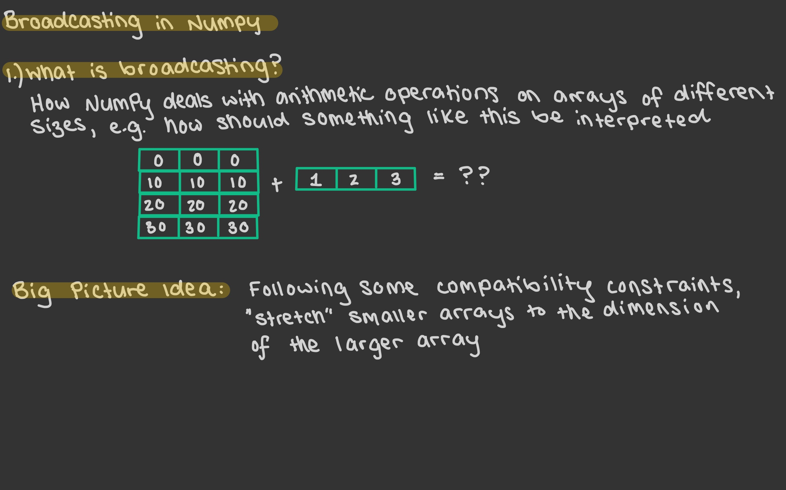 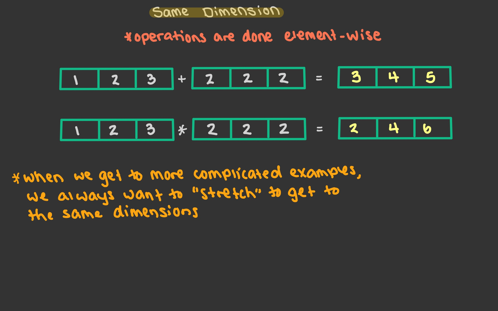 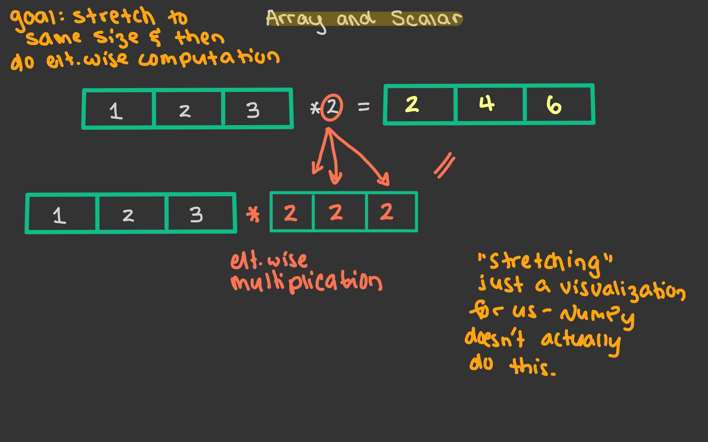 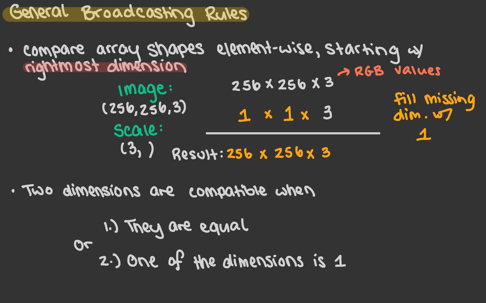 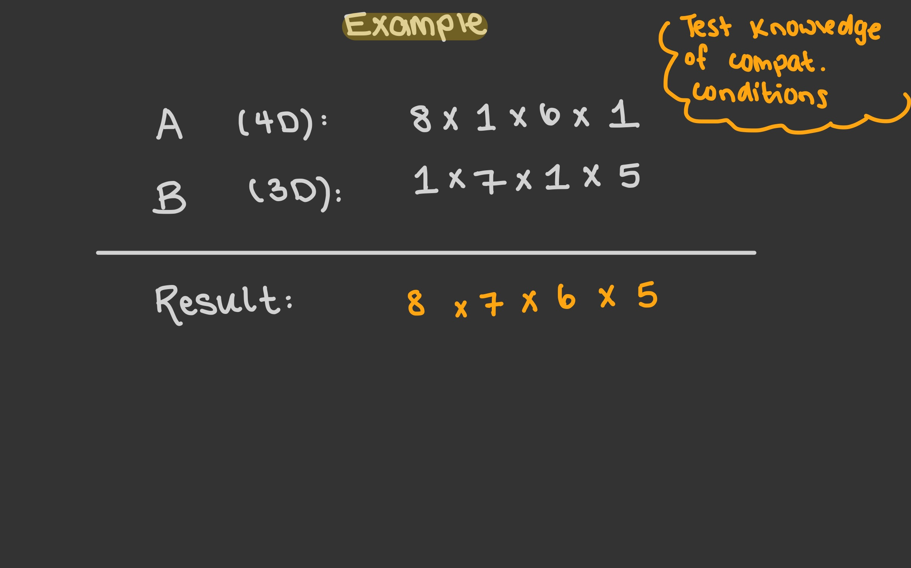 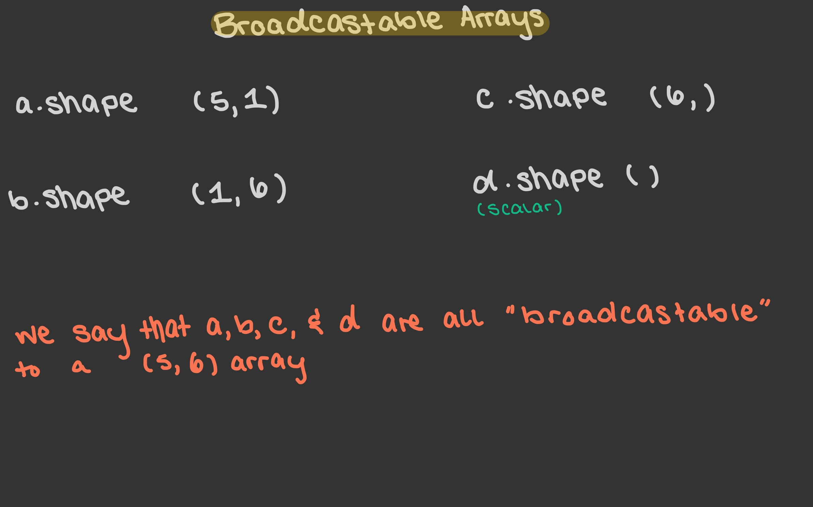 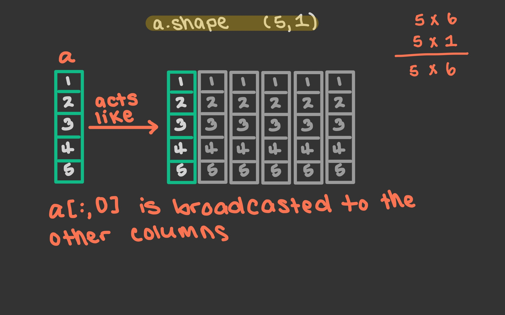 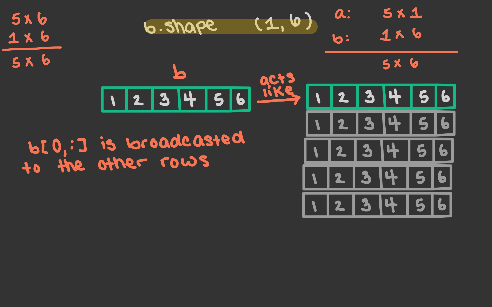 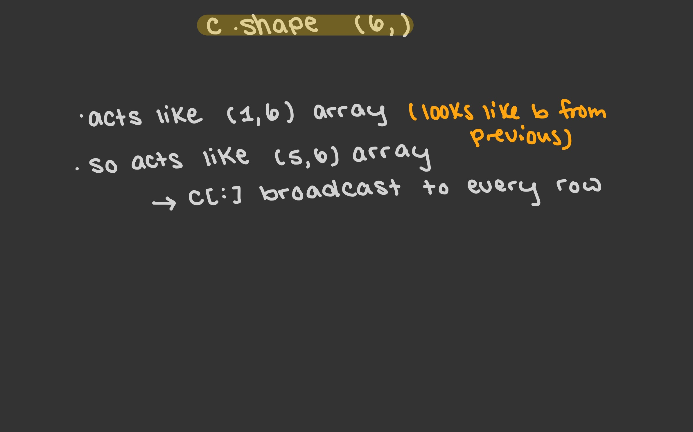 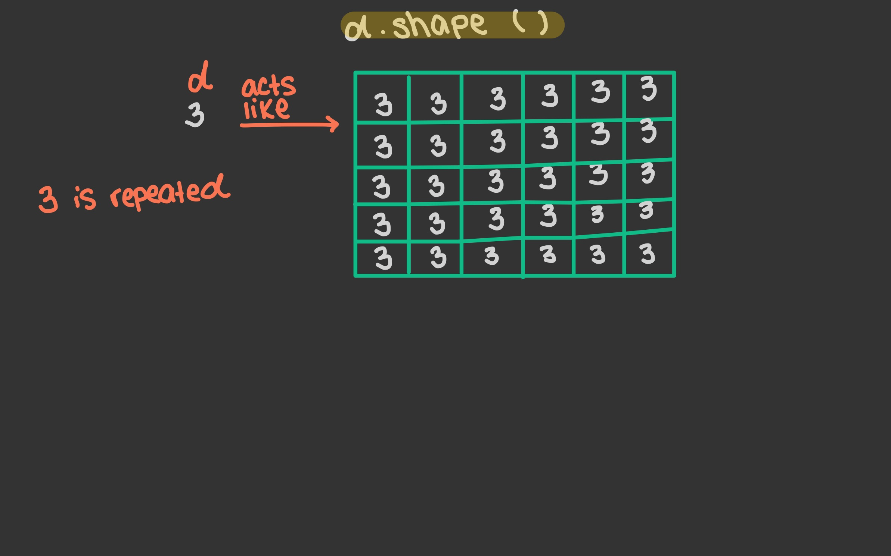 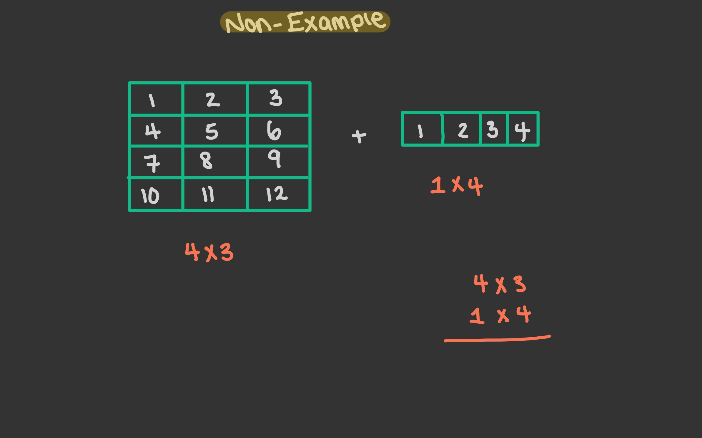
Logic in Python vs. Logic in NumPy#
General Rules#
In base Python:
and,or,notIn NumPy (and pandas):
&,|,~
import numpy as np
rng = np.random.default_rng()
n = 20
arr = rng.integers(-50,51, size=n)
mylist = list(arr)
mylist
[33,
-2,
44,
-24,
50,
50,
18,
0,
16,
-44,
20,
-6,
10,
50,
-12,
1,
-12,
49,
9,
-34]
Motivating Question: Find all entries in arr and mylist that are strictly between -10 and 10.
Let’s start with the list. We’ll do it with something called “list comprehension”.
[x for x in mylist if (x > -10) and (x < 10)]
[-2, 0, -6, 1, 9]
As an example, notice that if I use & there is no erorr. However, I want to avoid doing this. It won’t always work the way you expect.
[x for x in mylist if (x > -10) & (x < 10)]
[-2, 0, -6, 1, 9]
Practice with negation, and so that we can practice using or and not.
[x for x in mylist if not((x <= -10) or (x >= 10))]
[-2, 0, -6, 1, 9]
[x for x in mylist if not(x <= -10) and not(x >= 10)]
[-2, 0, -6, 1, 9]
arr
array([ 33, -2, 44, -24, 50, 50, 18, 0, 16, -44, 20, -6, 10,
50, -12, 1, -12, 49, 9, -34])
Now, let’s practice with NumPy arrays.
(arr > -10) & (arr < 10)
array([False, True, False, False, False, False, False, True, False,
False, False, True, False, False, False, True, False, False,
True, False])
This is an example of a boolean array. For each entry of arr it returns True if the corresponding entry is between -10 and 10, and False otherwise.
arr[(arr > -10) & (arr < 10)]
array([-2, 0, -6, 1, 9])
This is an example of boolean indexing.
Now let’s get some practice with negation.
arr[~((arr <= -10) | (arr >= 10))]
array([-2, 0, -6, 1, 9])
arr[~(arr <= -10) & ~(arr >= 10)]
array([-2, 0, -6, 1, 9])
#Notice we get an error
(arr > -10) and (arr < 10)
---------------------------------------------------------------------------
ValueError Traceback (most recent call last)
Input In [53], in <cell line: 2>()
1 #Notice we get an error
----> 2 (arr > -10) and (arr < 10)
ValueError: The truth value of an array with more than one element is ambiguous. Use a.any() or a.all()
The axis keyword argument#
Motivating Question: If you roll 4 distinct 6-sided dice, what is the probability that the largest value is 5?
The code below models rolling 4 dice.
rng.integers(1,7,size=4)
array([3, 6, 6, 4])
Let’s start by coding this is the way we’re most familiar with.
exp = 10
s = 0
for i in range(exp):
if np.max(rng.integers(1,7,size=4)) == 5:
s += 1 #shorthand for s = s+1
s/exp
0.5
for-loops are extremely slow! We’ll see that in just a minute. Remember the Jupyter magic %%timeit – the it means iteration, and it runs the code a number of times and computes average time. This will be too slow for this example, so we’ll use %%time.
%%time
exp = 10**6
s = 0
for i in range(exp):
if np.max(rng.integers(1,7,size=4)) == 5:
s += 1 #shorthand for s = s+1
s/exp
CPU times: user 14.5 s, sys: 735 ms, total: 15.2 s
Wall time: 14.6 s
0.284027
exp = 10
rng.integers(1,7,size=(exp,4))
array([[1, 5, 2, 5],
[1, 2, 6, 2],
[1, 3, 1, 2],
[5, 3, 5, 2],
[2, 3, 5, 5],
[3, 2, 3, 4],
[5, 1, 5, 3],
[6, 6, 2, 4],
[6, 5, 5, 5],
[6, 1, 4, 2]])
Here, each row of the array represents an experiment.
arr = rng.integers(1,7,size=(exp,4))
print(arr)
[[1 3 1 6]
[2 1 6 6]
[1 2 6 4]
[6 1 6 1]
[2 3 4 2]
[6 2 2 5]
[1 3 6 2]
[1 6 3 3]
[6 2 3 6]
[6 6 4 5]]
The first method I’m going to show you is extremely flexible in that it will work for really any function I want – the drawback is that it will also be quite slow.
help(np.apply_along_axis)
Help on function apply_along_axis in module numpy:
apply_along_axis(func1d, axis, arr, *args, **kwargs)
Apply a function to 1-D slices along the given axis.
Execute `func1d(a, *args, **kwargs)` where `func1d` operates on 1-D arrays
and `a` is a 1-D slice of `arr` along `axis`.
This is equivalent to (but faster than) the following use of `ndindex` and
`s_`, which sets each of ``ii``, ``jj``, and ``kk`` to a tuple of indices::
Ni, Nk = a.shape[:axis], a.shape[axis+1:]
for ii in ndindex(Ni):
for kk in ndindex(Nk):
f = func1d(arr[ii + s_[:,] + kk])
Nj = f.shape
for jj in ndindex(Nj):
out[ii + jj + kk] = f[jj]
Equivalently, eliminating the inner loop, this can be expressed as::
Ni, Nk = a.shape[:axis], a.shape[axis+1:]
for ii in ndindex(Ni):
for kk in ndindex(Nk):
out[ii + s_[...,] + kk] = func1d(arr[ii + s_[:,] + kk])
Parameters
----------
func1d : function (M,) -> (Nj...)
This function should accept 1-D arrays. It is applied to 1-D
slices of `arr` along the specified axis.
axis : integer
Axis along which `arr` is sliced.
arr : ndarray (Ni..., M, Nk...)
Input array.
args : any
Additional arguments to `func1d`.
kwargs : any
Additional named arguments to `func1d`.
.. versionadded:: 1.9.0
Returns
-------
out : ndarray (Ni..., Nj..., Nk...)
The output array. The shape of `out` is identical to the shape of
`arr`, except along the `axis` dimension. This axis is removed, and
replaced with new dimensions equal to the shape of the return value
of `func1d`. So if `func1d` returns a scalar `out` will have one
fewer dimensions than `arr`.
See Also
--------
apply_over_axes : Apply a function repeatedly over multiple axes.
Examples
--------
>>> def my_func(a):
... """Average first and last element of a 1-D array"""
... return (a[0] + a[-1]) * 0.5
>>> b = np.array([[1,2,3], [4,5,6], [7,8,9]])
>>> np.apply_along_axis(my_func, 0, b)
array([4., 5., 6.])
>>> np.apply_along_axis(my_func, 1, b)
array([2., 5., 8.])
For a function that returns a 1D array, the number of dimensions in
`outarr` is the same as `arr`.
>>> b = np.array([[8,1,7], [4,3,9], [5,2,6]])
>>> np.apply_along_axis(sorted, 1, b)
array([[1, 7, 8],
[3, 4, 9],
[2, 5, 6]])
For a function that returns a higher dimensional array, those dimensions
are inserted in place of the `axis` dimension.
>>> b = np.array([[1,2,3], [4,5,6], [7,8,9]])
>>> np.apply_along_axis(np.diag, -1, b)
array([[[1, 0, 0],
[0, 2, 0],
[0, 0, 3]],
[[4, 0, 0],
[0, 5, 0],
[0, 0, 6]],
[[7, 0, 0],
[0, 8, 0],
[0, 0, 9]]])
axis simply means the direction I want to do the computation along.
print(arr)
[[1 3 1 6]
[2 1 6 6]
[1 2 6 4]
[6 1 6 1]
[2 3 4 2]
[6 2 2 5]
[1 3 6 2]
[1 6 3 3]
[6 2 3 6]
[6 6 4 5]]
np.apply_along_axis(np.max, axis=1, arr=arr)
array([6, 6, 6, 6, 4, 6, 6, 6, 6, 6])
Try to predict what will happen when I run the following:
np.apply_along_axis(np.max, axis=0, arr=arr)
array([6, 6, 6, 6])
exp = 10
arr = rng.integers(1,7,size=(exp,4))
(np.apply_along_axis(np.max,axis=1,arr=arr) == 5).mean()
0.1
Now, let’s time this with \(10^6\) experiments. You might be surprised to see that it’s still pretty slow.
%%time
exp = 10**6
arr = rng.integers(1,7,size=(exp,4))
(np.apply_along_axis(np.max,axis=1,arr=arr) == 5).mean()
CPU times: user 5.74 s, sys: 14.9 ms, total: 5.75 s
Wall time: 5.75 s
0.284783
The reason this is slower than we expect is because np.apply_along_axis is not optimized for this kind of computation. It has to be flexible enough to work with almost any function we give it.
exp = 10
arr = rng.integers(1,7,size=(exp,4))
(arr.max(axis=1) == 5).mean()
0.2
#1-Dimensional
(arr.max(axis=1) == 5)
array([ True, False, False, True, False, False, False, False, False,
False])
#axis = 0 is the default
(arr.max(axis=1) == 5).mean(axis=0)
0.2
The following throws and error, since the array only has one dimension. We only talk about axis=1 when there are at least two dimensions.
(arr.max(axis=1) == 5).mean(axis=1)
---------------------------------------------------------------------------
AxisError Traceback (most recent call last)
Input In [68], in <cell line: 1>()
----> 1 (arr.max(axis=1) == 5).mean(axis=1)
File ~/opt/miniconda3/envs/math9/lib/python3.9/site-packages/numpy/core/_methods.py:168, in _mean(a, axis, dtype, out, keepdims, where)
164 arr = asanyarray(a)
166 is_float16_result = False
--> 168 rcount = _count_reduce_items(arr, axis, keepdims=keepdims, where=where)
169 if rcount == 0 if where is True else umr_any(rcount == 0, axis=None):
170 warnings.warn("Mean of empty slice.", RuntimeWarning, stacklevel=2)
File ~/opt/miniconda3/envs/math9/lib/python3.9/site-packages/numpy/core/_methods.py:76, in _count_reduce_items(arr, axis, keepdims, where)
74 items = 1
75 for ax in axis:
---> 76 items *= arr.shape[mu.normalize_axis_index(ax, arr.ndim)]
77 items = nt.intp(items)
78 else:
79 # TODO: Optimize case when `where` is broadcast along a non-reduction
80 # axis and full sum is more excessive than needed.
81
82 # guarded to protect circular imports
AxisError: axis 1 is out of bounds for array of dimension 1
help(arr.max)
Help on built-in function max:
max(...) method of numpy.ndarray instance
a.max(axis=None, out=None, keepdims=False, initial=<no value>, where=True)
Return the maximum along a given axis.
Refer to `numpy.amax` for full documentation.
See Also
--------
numpy.amax : equivalent function
%%time
exp = 10**6
arr = rng.integers(1,7,size=(exp,4))
(arr.max(axis=1) == 5).mean()
CPU times: user 43.8 ms, sys: 245 µs, total: 44 ms
Wall time: 43.5 ms
0.285451
Wow! So fast!
More on the axis keyword argument#
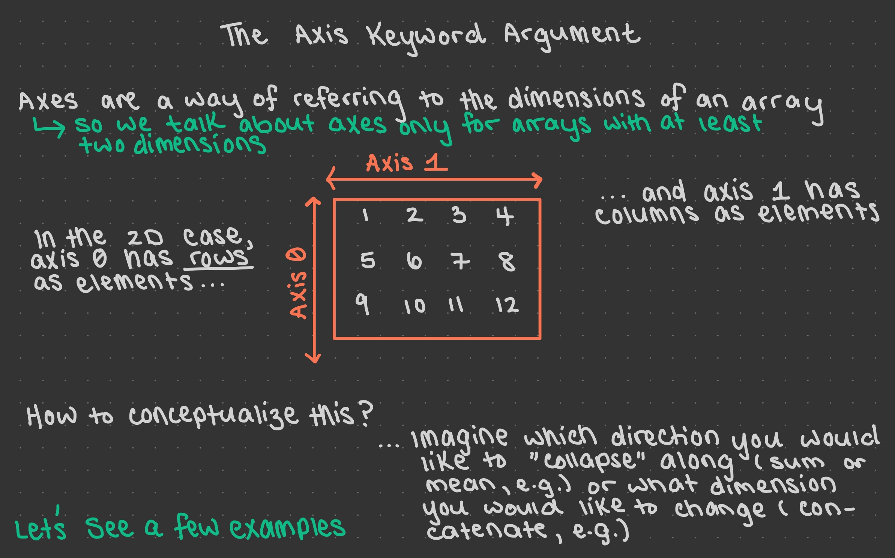 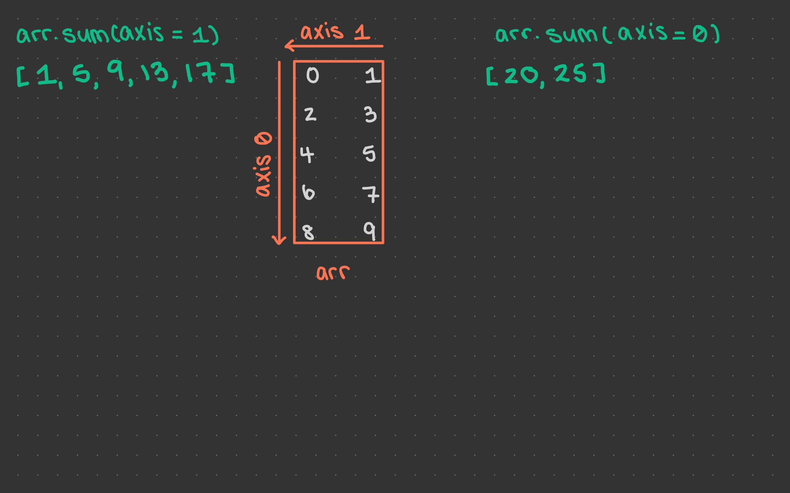 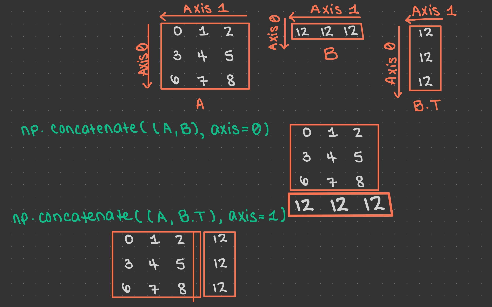